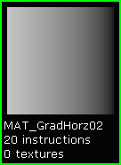

UDN
Search public documentation:
MaterialMasks
日本語訳
中国翻译
한국어
Interested in the Unreal Engine?
Visit the Unreal Technology site.
Looking for jobs and company info?
Check out the Epic games site.
Questions about support via UDN?
Contact the UDN Staff
中国翻译
한국어
Interested in the Unreal Engine?
Visit the Unreal Technology site.
Looking for jobs and company info?
Check out the Epic games site.
Questions about support via UDN?
Contact the UDN Staff
UE3 Home > Materials & Textures > Material Masks
Material Masks
Overview
The advantages to using algorithmically designed expression masks includes: smaller package size due to the absence of textures; the ability to quickly modify the mask in the Unreal Editor; animated masks using various Material expressions including Panner, Rotator, Sine, Time, etc.; and Kismet control over various mask properties. These algorithmic masks can be used in standard texture-based Materials to provide opacity/transparency masks; to mask off a specific area of a texture to change its specular amount or specular power; as a mask for a LinearInterpolate expression to mix multiple textures together; or even just to create a Material that is a gradient color set for effects.
The Basic Building Blocks
The DotProduct expression requires two inputs both with the same number of "channels", which is two channels per input in this specific case, using a TexCoord providing U and V and a Constant2Vector providing R and G.
The DotProduct operation takes these two sets of values and returns a scalar quantity, which generates a sequence of values resembling a gradient when appropriate input values are used. The TexCoord expression connected to the DotProduct's A node defaults to UV values of 1.0, which provide a smooth gradient when combined with the B node values of 0 and 1.
 Changing the TexCoord UV values will change the gradient. However, this is better accomplished by changing the values of the Constant2Vector expression connected to the B node instead.
The Constant2Vector expression connected to the DotProduct's B node provides the second pair of values used to compute the scalar quantity. By using values in the range of 0 to 1, the DotProduct expression will produce a gradient whose gray value ranges from 0 to 1.
Changing the TexCoord UV values will change the gradient. However, this is better accomplished by changing the values of the Constant2Vector expression connected to the B node instead.
The Constant2Vector expression connected to the DotProduct's B node provides the second pair of values used to compute the scalar quantity. By using values in the range of 0 to 1, the DotProduct expression will produce a gradient whose gray value ranges from 0 to 1. Setting the Constant2Vector values to R=0 G=1 will create a vertical gradient. R=1 G=0 values will create a horizontal gradient. R=1 G=1 values will create an angular gradient. Using -1 values will create additional variations but are usually less useful. For Materials, a value of 0.0 is black and a value of 1.0 is white. Values higher than 1.0 "push" the color into bloom. This feature can be utilized in algorithmic masks in order to change the percentage of gradient versus solid, providing smaller gradient ramps or soft feathered gradient edges.
Setting either of the Constant2Vector's RG properties to a value greater than 1 will modify the amount of gradient range from black to white, decreasing the gradient percentage and increasing the white percentage. A ConstantClamp expression can be added to the output to clamp the range back to 0 to 1. In order to create masks with a solid edge instead of a gradient, a Subtract expression is used to set the amount of solid black area, and a Multiply expression is used to drive the output to a solid black and white transition.
Putting It All Together
Animation of values can also be accomplished with various Material expressions including Panner, Rotator, Sine, Time, etc. Horizontal Gradient Horizontal Gradient  Horizontal Gradient Pushed 50% Vertical Gradient Vertical Gradient Angle Gradient
 Angle Gradient
Color Gradient
Color Feathered Gradient
Color Multiband Gradient
Three Point Gradient
Solid Top
Angle Gradient
Color Gradient
Color Feathered Gradient
Color Multiband Gradient
Three Point Gradient
Solid Top
 Solid Bottom
Solid Left
Solid Right
Solid Bottom
Solid Left
Solid Right
 Solid Border
Solid Border